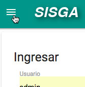
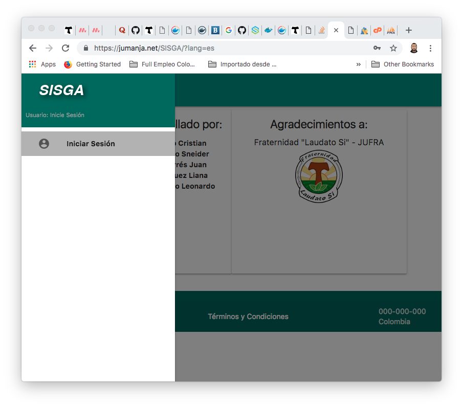
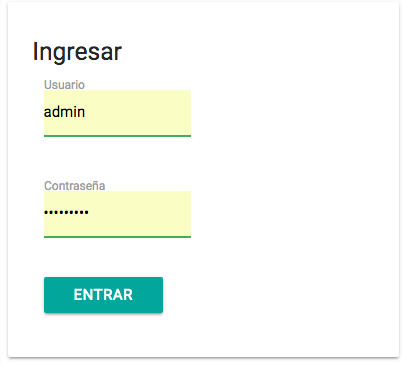
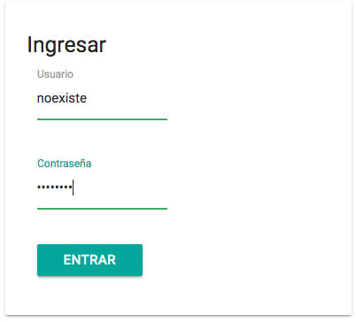
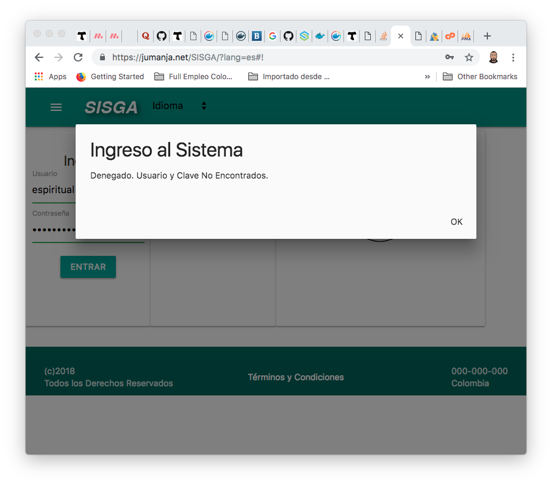

Para acceder a la versión web de SISGA, se debe abrir en un navegador (se recomienda Google Chrome) http://sisga.jumanja.net o https://jumanja.net/SISGA que deberá mostrarles el aplicativo funcionando online. Àmbos enlaces permiten utilizar el aplicativo accediendo a la misma versión de código y de datos.
Nota:Este manual habla de la explicación de pantallas y funcionalidades. Para instrucciones referente a las tablas y configuraciones del SISGA, por favor refiérase al Manual de Administrador del Sistema, y al Manual Técnico del Sistema.

Dentro del alcance de este proyecto está el dejar sentadas las bases para que el sistema pueda ser visualizado en más de un idioma. Para efectos de implementar las bases de esta funcionalidad, se habilitó un control que permite cambiar el idioma. Este control está ubicado en la barra superior como se puede apreciar en las siguientes imágenes:

Al hacer click se podrá elegir el idioma en el que se quiere visualizar el software. Cabe anotar que al hacer click en el didioma, se recargará la página y quedará disponible para que se inicie sesión:


A continuación la pantalla inicial En Inglés y en Español:

Nota:Por el momento ésto solo aplica para la pantalla login, ya que no está completa esta funcionalidad de varios idiomas, completarla está fuera del alcance de este proyecto. Observe también que los manuales solo están disponibles en versión en Español.
Antes de entrar usuario y clave, si en su pantalla no le aparece el menú lateral desplegado, porque la ventana del navegador está reducida, por favor haga click en el botón de menú (botón con las tres rayas horizontales ubicado en la esquina superior izquierda):
Y note que solo aparecerá en el menú lateral izquierdo, la opción “Iniciar Sesión”.

Nota: Estos usuarios y claves son de pruebas y una vez se vaya a instalar el aplicativo en el ambiente productivo, se depurará la información y se creará el usuario administrador definitivo y éste podrá crear los usuarios personalizados, con información real, y también cada clave será privada. Adicionalmente, la clave de cada usuario es guardada de forma encriptada en la base de datos para incrementar la seguridad del aplicativo.
Para acceder a SISGA como administrador, se debe ingresar Usuario y Contraseña y luego hacer click sobre el botón ENTRAR:
Si el usuario, contraseña corresponden a un usuario administrador activo en el sistema, aparecerán las opciones de "Configurar" y "Cerrar Sesión" en ese menú lateral izquierdo (haciendo click en el boton de menú, esquina superior izquierda):

Si los datos de Usuario, Contraseña no corresponden con los datos de un Usuario existente y Activo en el sistema, por ejemplo:
Aparecerá en pantalla un mensaje de validación, negando el acceso:

En este ejemplo, el usuario espiritual está creado, pero no está Activo, por lo que si se intenta ingresar, también aparecerá el acceso negado:
Para acceder a SISGA como miembro de Junta Local (Presidente, Secretario, Tesorero, etc..) se debe ingresar Usuario y Contraseña y luego hacer click sobre el botón ENTRAR.
Si el usuario y contraseña corresponden a un usuario activo en el sistema, aparecerán solo las opciones a las que tiene acceso. Sin embargo, para secretaría aparecerán dos opciones adicionales “Elaborar Actas” y “Configurar”, pues este usuario tiene dentro de su servicio, responsabilidades adicionales en el sistema.
Para acceder a SISGA como miembro de Regional / Nacional se debe ingresar Usuario y Contraseña y luego hacer click sobre el botón ENTRAR.
Si el usuario y contraseña corresponden a un usuario activo en el sistema, aparecerán solo las opciones a las que tiene acceso. Éste tipo de usuarios solo tienen acceso a consultar información, es decir operan como una especie de usuarios invitados sin posiblidad de afectar los datos.